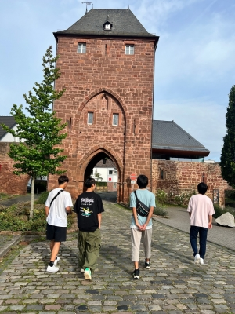
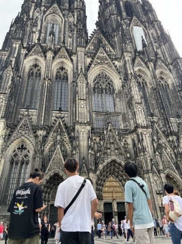
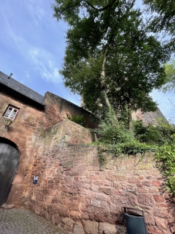
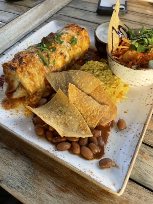

ちょんまげくん in Germany
ドイツに留学中の、もとHimawariくん 'sのお母さんが
ご子息の様子を見に行きつつ、この夏休みドイツ旅行をされたそうで
写真を送ってくださいました。
国際免許をお持ちの彼女は、現地でレンタカーを借りて
Himawariくんたちをケルン観光に連れて行ってくれたようです・・・
なんてカッコイイお母さまなんでせう・・・ !!

↑
ハルの同級生1人と、1コ下の後輩2人。
久しぶりに写真で見た彼らはずいぶん雰囲気も変わって
大人の顔になっていました。

↑
ケルンの大聖堂 ? かしら〜 ??

ハルからも写真が送られてきました。
日本にはない風景です。
やっぱりヨーロッパって、視界が開けてるっていうか
広い感じがしますね〜。

↑
なんかおいしそうざますよ !
なんて料理なのかわかんないですけど・・・(笑)。
(たぶん、ハルに説明しろって言ってもできんと思うけど 笑)
↑
・・・なにコレ(汗)。
かわいくないオブジェ・・・どうやら熊っぽいんだけど・・・
ケド、見てるとなんかじわじわとクセになる顔しとるね(笑)。
さて・・・現地での活動計画、などなど・・・詳しい予定などは
一切もらっていないので、ヤツが現地でどんな活動に参加しているのか
どんなタイムスケジュールで動いているのか・・・など
時々、ハル本人がメールを送ってきたりするだけで
ワタクシ共は、まったく知りません(笑)。
ヤツがつたない説明で言って来た内容としては・・・
「サッカーの練習は週に5日程度、2時間くらい」
「・・・・ (汗)。」
えーっと・・・2時間練習するのは分かったよ。
でもその他の時間はなにやってんの ??
さすがにサッカー留学に行って、1日2時間サッカーやっておしまい
って訳はないと思うんだけど(笑)、なんせ言葉足らずで言語化もへたくそな
おバカ男子の言うことなので、現地の状況は全く分からずでしたのよ。
そこに、ドイツ旅行兼ねて息子さんの様子を見に行かれたお母さま情報ですよ !
長期で留学に行ってる他の3人は現地で学校にも通っているのですが・・・
「みんなが学校に行ってる間は、年上の子たちとも練習できるって聞いてます。」
と、現地情報教えてくれました。ありがとう !!
トレマの動画も撮って送ってくれました。本当にありがとう〜 !!
ハルは到着して2日目だったけどすっかりなじんでいたそうです・・・
まぁ、その辺りは全く心配していなかったけんだどね(笑)。
↑動画からのスクショ。
たぶん、同じ年の子たちばっかりだと思うけど、みんなでっかい !!
ハルは日本では特別ちっちゃくはないんだけど(もやしくんだけどね 汗)
ピッチに立つちょんまげくんは大人の中に紛れ込んだ子どものようでした。
ドイツ人、すごいね ! みんなでっかいよ〜。
きっと、日本での感覚とはまるで違うんだろうな〜と。
今どきどこにいたって、世界レベルのスーパープレーだって
いつでも見られる時代だけど、
世界との差を実際体感するのとではきっとぜんぜん違うんじゃないかな。
早いもんで、もう日程は半分ほどが終了しましたよ。
ヤツがどんな「おみやげ」を持ち帰ってくるのか、楽しみです(笑)。
・・・ひましゃんじゃありましぇんよ !
いっしゅん、わんこさんかとおもったでしゅけど !
よくみたら・・・せなかになんかのってましゅよ !
こわいでしゅよ !!